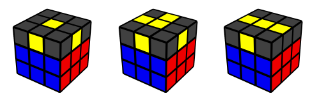
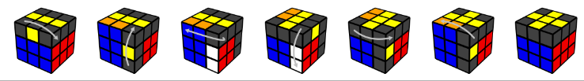

Top cross

Hold the cube to match one of the following (ignore the corner pieces):

Then do the following moves:

How to memorize this algorithm:
- Turn the front clockwise
- Do the 4-move sequence
- Turn the front counterclockwise
If the cross is not solved yet, hold the cube to match the new case and repeat.
Note: Focus on the colors on edge pieces, and not corner pieces. If you have 1 or 3 edge pieces facing up, your cube is unsolvable, and needs to be taken apart and reassembled.